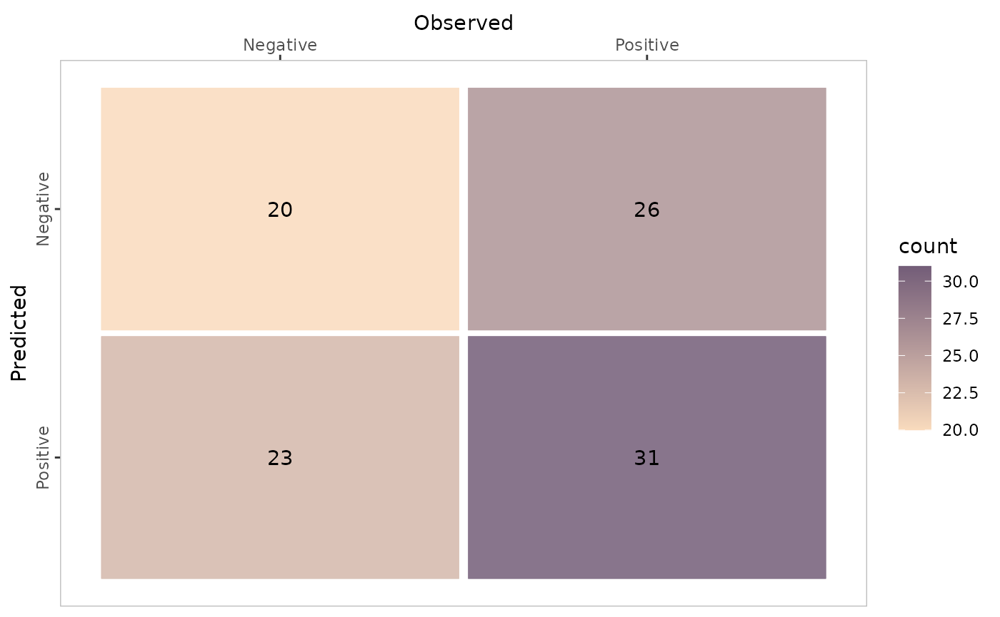
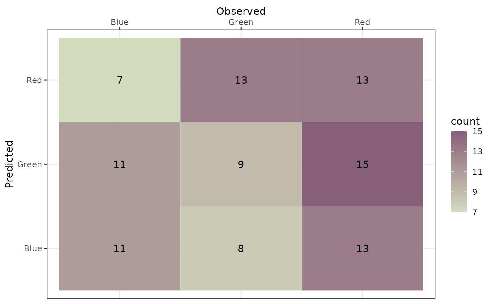

Assessing classification quality
Adrian Correndo & Luciana Nieto
2022-06-22
Source:vignettes/classification_case.Rmd
classification_case.Rmd1 Introduction
This vignette introduces the functionality of the metrica package applied to classification tasks.
Select and briefly explain example dataset.
2. Example datasets
binomial_case <- data.frame(labels = sample(c("Pos","Neg"), 100, replace = TRUE),
predictions = sample(c("Pos","Neg"), 100, replace = TRUE)) %>%
mutate(predictions = as.factor(predictions), labels = as.factor(labels))
multinomial_case <- data.frame(labels = sample(c("Red","Green", "Blue"), 100, replace = TRUE),
predictions = sample(c("Red","Green", "Blue"), 100, replace = TRUE) ) %>%
mutate(predictions = as.factor(predictions), labels = as.factor(labels))3.1. Binary
# a. Print
binomial_case %>% confusion_matrix(obs = labels, pred = predictions,
plot = FALSE, colors = c(low="#f9dbbd" , high="#735d78"),
unit = "count")
#> OBSERVED
#> PREDICTED Neg Pos
#> Neg 31 26
#> Pos 24 19
# b. Plot
binomial_case %>% confusion_matrix(obs = labels, pred = predictions,
plot = TRUE, colors = c(low="#f9dbbd" , high="#735d78"),
unit = "count")
3.2. Multiclass
# a. Print
multinomial_case %>% confusion_matrix(obs = labels,
pred = predictions,
plot = FALSE, colors = c(low="#f9dbbd" , high="#735d78"),
unit = "count")
#> OBSERVED
#> PREDICTED Blue Green Red
#> Blue 11 11 7
#> Green 8 9 13
#> Red 13 15 13
# b. Plot
multinomial_case %>% confusion_matrix(obs = labels,
pred = predictions,
plot = TRUE, colors = c(low="#d3dbbd" , high="#885f78"),
unit = "count")
4.1. Single dataset
# Get classification metrics one by one
binomial_case %>% accuracy(data = ., obs = labels, pred = predictions, tidy=TRUE)
#> accuracy
#> 1 0.5
binomial_case %>% error_rate(data = ., obs = labels, pred = predictions, tidy=TRUE)
#> misclass_rate
#> 1 0.5
binomial_case %>% precision(data = ., obs = labels, pred = predictions, tidy=TRUE)
#> precision
#> 1 0.4418605
binomial_case %>% recall(data = ., obs = labels, pred = predictions, atom = F, tidy=TRUE)
#> recall
#> 1 0.4222222
binomial_case %>% specificity(data = ., obs = labels, pred = predictions, tidy=TRUE)
#> spec
#> 1 0.5636364
binomial_case %>% baccu(data = ., obs = labels, pred = predictions, tidy=TRUE)
#> baccu
#> 1 0.4929293
binomial_case %>% fscore(data = ., obs = labels, pred = predictions, tidy=TRUE)
#> fscore
#> 1 0.4318182
binomial_case %>% cohen_kappa(data = ., obs = labels, pred = predictions, tidy=TRUE)
#> kappa
#> 1 -0.01419878
binomial_case %>% mcc(data = ., obs = labels, pred = predictions, tidy=TRUE)
#> mcc
#> 1 -0.01421048
binomial_case %>% fmi(data = ., obs = labels, pred = predictions, tidy=TRUE)
#> fmi
#> 1 0.4319297
# Get all at once with metrics_summary()
binomial_case %>% metrics_summary(data = ., obs = labels, pred = predictions, type = "classification")
#> Metric Score
#> 1 accuracy 0.50000000
#> 2 error_rate 0.50000000
#> 3 precision 0.44186047
#> 4 recall 0.42222222
#> 5 specificity 0.56363636
#> 6 baccu 0.49292929
#> 7 fscore 0.43181818
#> 8 cohen_kappa -0.01419878
#> 9 mcc -0.01421048
#> 10 fmi 0.43192975
multinomial_case %>% metrics_summary(data = ., obs = labels, pred = predictions, type = "classification")
#> Warning in metrica::mcc(data = ~., obs = ~labels, pred = ~predictions): The
#> generalization of the Matthews Correlation Coefficient for a multiclass setting
#> has not been implemented yet in metrica
#> Warning in metrica::fmi(data = ~., obs = ~labels, pred = ~predictions): The
#> Fowlkes-Mallows Index is not available for multiclass cases. The result has been
#> recorded as NA
#> Metric Score
#> 1 accuracy 0.330000000
#> 2 error_rate 0.670000000
#> 3 precision 0.332127839
#> 4 recall 0.331610750
#> 5 specificity 0.664768916
#> 6 baccu 0.498189833
#> 7 fscore 0.331869093
#> 8 cohen_kappa -0.004648373
#> 9 mcc NA
#> 10 fmi NA
# Get a selected list at once with metrics_summary()
selected_class_metrics <- c("accuracy", "recall", "fscore")
# Binary
binomial_case %>% metrics_summary(data = ., obs = labels, pred = predictions, type = "classification",
metrics_list = selected_class_metrics)
#> Metric Score
#> 1 accuracy 0.5000000
#> 2 recall 0.4222222
#> 3 fscore 0.4318182
# Multiclass
multinomial_case %>% metrics_summary(data = ., obs = labels, pred = predictions, type = "classification",
metrics_list = selected_class_metrics)
#> Warning in metrica::mcc(data = ~., obs = ~labels, pred = ~predictions): The
#> generalization of the Matthews Correlation Coefficient for a multiclass setting
#> has not been implemented yet in metrica
#> Warning in metrica::fmi(data = ~., obs = ~labels, pred = ~predictions): The
#> Fowlkes-Mallows Index is not available for multiclass cases. The result has been
#> recorded as NA
#> Metric Score
#> 1 accuracy 0.3300000
#> 2 recall 0.3316108
#> 3 fscore 0.3318691